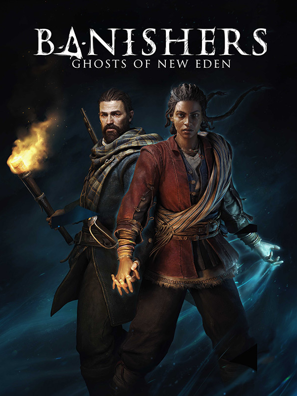

Banishers: Ghosts of New Eden
Banishers: Ghosts of New Eden
Details
|  | |
| Playtime | Not Played |
| Last Activity | Never |
| Added | 09/09/2025 17:13:15 |
| Modified | 09/09/2025 17:14:27 |
| Completion Status | Not Played |
| Library | Steam |
| Source | Steam |
| Platform | PC (Windows) |
| Release Date | 13/02/2024 |
| Community Score | 79 |
| Critic Score | 78 |
| User Score | |
| Genre | Adventure Role-playing (RPG) |
| Developer | DON'T NOD |
| Publisher | Focus Entertainment |
| Feature | Single Player |
| Links | Steam Official Website Twitch Epic YouTube Subreddit Community Wiki Wikipedia Xbox Playstation Discord |
| Tag | |
Description
In New Eden, 1695, communities of settlers are plagued by a dreadful curse. As Banishers, step into their lives, investigate the source of evil, unravel chilling mysteries, explore diverse landscapes, and interact with unforgettable characters whose fate lies in your hands.
Banishers: Ghosts of New Eden is an all-new title crafted by renowned studio DON'T NOD, known for their acclaimed titles such as Life is Strange and Vampyr. Immerse yourself in an intimate narrative Action-RPG, taking you on an exhilarating journey between life, death, love and sacrifices.
Play as a couple of Banishers, Red and Antea, experienced spirit hunters entrusted with the daunting task of dispelling a malevolent curse through powerful rituals. Protect the living from the threat of lingering ghosts and specters, and become a beacon of hope in a world consumed by darkness.
Experience a heart-wrenching love story between Antea Duarte and Red mac Raith. When Antea is killed and turned into a spirit, you find yourself facing a choice. Will you uphold your oath and ascend her soul, or will you sacrifice the living in the hope of bringing her back? Your decisions will shape the fate of New Eden’s inhabitants - may they be living or dead, and determine the end of your journey.
- BLAME the living and sacrifice their lives, holding them responsible for their actions
- BANISH souls of the departed, condemning them to eternal suffering
- ASCEND souls, liberating them from eternal sorrow and granting them serenity

Banishers are specialized in combat against undead creatures, such as specters or ghosts. Combine Red's physical arsenal with Antea's supernatural powers in a dynamic combat system. Find your own style by mixing weapon attacks and spiritual abilities. Powerful synergies will lead you to defeat New Eden’s most dangerous enemies and bosses.

Unleash the full power of the Banishers by unlocking new gear and supernatural abilities. By exploring New Eden, you will find ancient artifacts, trinkets and valuable resources to enhance your equipment in preparation of future fights. In addition to your arsenal, progress in Antea’s skill trees to upgrade her devastating spectral powers and unseal new combos.

Investigate haunting cases in a mystical world full of dark secrets. Discover New Eden, a North America settlement marked by terrible stories and secrets of its tormented inhabitants. Understanding each resident’s motivations will be essential to guide your decisions throughout the game.